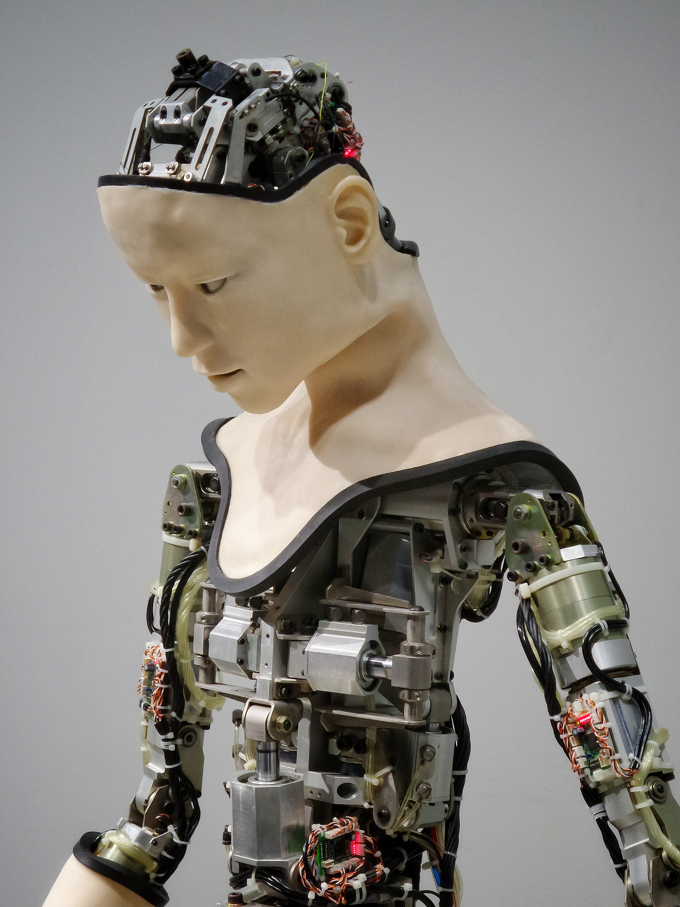

4차 산업혁명을 대표하는 기술 중 하나. 인공지능이란 인간의 학습능력과 추론능력, 지각능력, 자연언어의 이해능력 등을 컴퓨터 프로그램으로 실현하는 기술을 말한다. 인공지능은 다양한 분야에서 활용되고 있는데, 예를 들어 ‘알파고’의 경우 전 세계 바둑기사들과의 대결을 위해 설계되어 활용되었다. 인공지능은 두 가지로 분류될 수 있는데, 약한 인공지능과 강한 인공지능으로 분류된다. 약한 인공지능은 쉽게 말해 단편적인 업무에 특화된 인공지능을 말한다. 반면, 강한 인공지능은 어떤 문제를 실제로 사고하고 해결할 수 있는 컴퓨터 기반의 인공지능을 말한다. 즉, 수십, 수백가지의 일을 다 잘할 수 있다. 알파고 때 보여주었던 디프 러닝(deep learning)알고리즘으로 기계 스스로 학습할 수 있어 앞으로 인공지능은 빅데이터를 이용해 수많은 일을 잘 해낼 수 있을 것이다. 최근에는 인공지능 비서 서비스(인공지능 스피커)의 발전이 가장 대표적으로 이루어지고 있는데, 네이버(프렌즈), KT(기가지니), SKT(NUGU) 등 여러 선진 회사에서도 이를 위한 많은 노력을 기울이고 있다.
